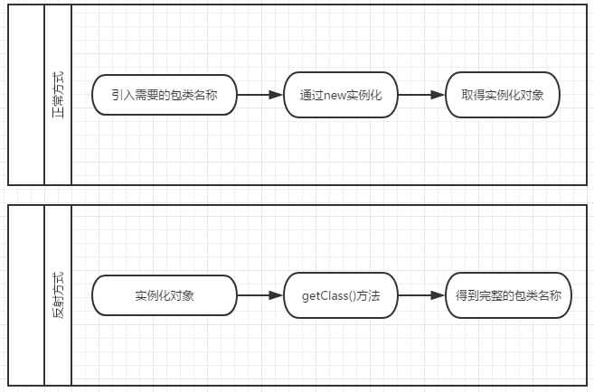

Java反射机制是什么？
Java 反射机制是 Java 语言的一个重要特性。在学习 Java 反射机制前，大家应该先了解两个概念，编译期和运行期。
编译期是指把源码交给编译器编译成计算机可以执行的文件的过程。在 Java 中也就是把 Java 代码编成 class 文件的过程。编译期只是做了一些翻译功能，并没有把代码放在内存中运行起来，而只是把代码当成文本进行操作，比如检查错误。
运行期是把编译后的文件交给计算机执行，直到程序运行结束。所谓运行期就把在磁盘中的代码放到内存中执行起来。
Java 反射机制是在运行状态中，对于任意一个类，都能够知道这个类的所有属性和方法；对于任意一个对象，都能够调用它的任意方法和属性；这种动态获取信息以及动态调用对象方法的功能称为 Java 语言的反射机制。简单来说，反射机制指的是程序在运行时能够获取自身的信息。在 Java 中，只要给定类的名字，就可以通过反射机制来获得类的所有信息。
Java 反射机制在服务器程序和中间件程序中得到了广泛运用。在服务器端，往往需要根据客户的请求，动态调用某一个对象的特定方法。此外，在 ORM 中间件的实现中，运用 Java 反射机制可以读取任意一个 JavaBean 的所有属性，或者给这些属性赋值。
Java 反射机制主要提供了以下功能，这些功能都位于
要想知道一个类的属性和方法，必须先获取到该类的字节码文件对象。获取类的信息时，使用的就是 Class 类中的方法。所以先要获取到每一个字节码文件（.class）对应的 Class 类型的对象.
众所周知，所有 Java 类均继承了 Object 类，在 Object 类中定义了一个 getClass() 方法，该方法返回同一个类型为 Class 的对象。例如，下面的示例代码：
利用 Class 类的对象 labelCls 可以访问 labelCls 对象的描述信息、JLabel 类的信息以及基类 Object 的信息。表 1 列出了通过反射可以访问的信息。
如表 1 所示，在调用 getFields() 和 getMethods() 方法时将会依次获取权限为 public 的字段和变量，然后将包含从超类中继承到的成员变量和方法。而通过 getDeclareFields() 和 getDeclareMethod() 只是获取在本类中定义的成员变量和方法。
Java 反射机制在一般的 Java 应用开发中很少使用，即便是 Java EE 阶段也很少使用。
编译期是指把源码交给编译器编译成计算机可以执行的文件的过程。在 Java 中也就是把 Java 代码编成 class 文件的过程。编译期只是做了一些翻译功能，并没有把代码放在内存中运行起来，而只是把代码当成文本进行操作，比如检查错误。
运行期是把编译后的文件交给计算机执行，直到程序运行结束。所谓运行期就把在磁盘中的代码放到内存中执行起来。
Java 反射机制是在运行状态中，对于任意一个类，都能够知道这个类的所有属性和方法；对于任意一个对象，都能够调用它的任意方法和属性；这种动态获取信息以及动态调用对象方法的功能称为 Java 语言的反射机制。简单来说，反射机制指的是程序在运行时能够获取自身的信息。在 Java 中，只要给定类的名字，就可以通过反射机制来获得类的所有信息。
Java 反射机制在服务器程序和中间件程序中得到了广泛运用。在服务器端，往往需要根据客户的请求，动态调用某一个对象的特定方法。此外，在 ORM 中间件的实现中，运用 Java 反射机制可以读取任意一个 JavaBean 的所有属性，或者给这些属性赋值。

Java 反射机制主要提供了以下功能，这些功能都位于
java.lang.reflect包。
- 在运行时判断任意一个对象所属的类。
- 在运行时构造任意一个类的对象。
- 在运行时判断任意一个类所具有的成员变量和方法。
- 在运行时调用任意一个对象的方法。
- 生成动态代理。
要想知道一个类的属性和方法，必须先获取到该类的字节码文件对象。获取类的信息时，使用的就是 Class 类中的方法。所以先要获取到每一个字节码文件（.class）对应的 Class 类型的对象.
众所周知，所有 Java 类均继承了 Object 类，在 Object 类中定义了一个 getClass() 方法，该方法返回同一个类型为 Class 的对象。例如，下面的示例代码：
Class labelCls = label1.getClass(); // label1为 JLabel 类的对象
利用 Class 类的对象 labelCls 可以访问 labelCls 对象的描述信息、JLabel 类的信息以及基类 Object 的信息。表 1 列出了通过反射可以访问的信息。
| 类型 | 访问方法 | 返回值类型 | 说明 |
|---|---|---|---|
| 包路径 | getPackage() | Package 对象 | 获取该类的存放路径 |
| 类名称 | getName() | String 对象 | 获取该类的名称 |
| 继承类 | getSuperclass() | Class 对象 | 获取该类继承的类 |
| 实现接口 | getlnterfaces() | Class 型数组 | 获取该类实现的所有接口 |
| 构造方法 | getConstructors() | Constructor 型数组 | 获取所有权限为 public 的构造方法 |
| getDeclaredContruectors() | Constructor 对象 | 获取当前对象的所有构造方法 | |
| 方法 | getMethods() | Methods 型数组 | 获取所有权限为 public 的方法 |
| getDeclaredMethods() | Methods 对象 | 获取当前对象的所有方法 | |
| 成员变量 | getFields() | Field 型数组 | 获取所有权限为 public 的成员变量 |
| getDeclareFileds() | Field 对象 | 获取当前对象的所有成员变量 | |
| 内部类 | getClasses() | Class 型数组 | 获取所有权限为 public 的内部类 |
| getDeclaredClasses() | Class 型数组 | 获取所有内部类 | |
| 内部类的声明类 | getDeclaringClass() | Class 对象 | 如果该类为内部类，则返回它的成员类，否则返回 null |
如表 1 所示，在调用 getFields() 和 getMethods() 方法时将会依次获取权限为 public 的字段和变量，然后将包含从超类中继承到的成员变量和方法。而通过 getDeclareFields() 和 getDeclareMethod() 只是获取在本类中定义的成员变量和方法。
Java 反射机制的优缺点
优点：- 能够运行时动态获取类的实例，大大提高系统的灵活性和扩展性。
- 与 Java 动态编译相结合，可以实现无比强大的功能。
- 对于 Java 这种先编译再运行的语言，能够让我们很方便的创建灵活的代码，这些代码可以在运行时装配，无需在组件之间进行源代码的链接，更加容易实现面向对象。
缺点：
- 反射会消耗一定的系统资源，因此，如果不需要动态地创建一个对象，那么就不需要用反射；
- 反射调用方法时可以忽略权限检查，获取这个类的私有方法和属性，因此可能会破坏类的封装性而导致安全问题。
Java 反射机制在一般的 Java 应用开发中很少使用，即便是 Java EE 阶段也很少使用。
关注公众号「站长严长生」，在手机上阅读所有教程，随时随地都能学习。内含一款搜索神器，免费下载全网书籍和视频。

微信扫码关注公众号